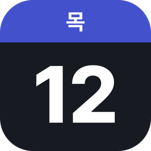

오늘 · 홈개인정보처리방침
시행일: 2026년 11월 12일
"오늘"(이하 "앱")은 윈도우 바탕화면에서 구글 캘린더 일정과 Google Tasks 할 일을 보여주는 데스크톱 위젯입니다.
1. 사용하는 정보
앱은 사용자가 구글 계정으로 로그인해 허용한 범위 안에서 아래 정보만 사용합니다.
- 구글 캘린더 목록과 일정 (보기·추가·수정)
- Google Tasks 할 일 목록과 할 일 (보기·추가·수정)
요청하는 권한: calendar.calendarlist.readonly, calendar.events, tasks
2. 정보의 저장 위치
- 모든 정보는 사용자의 PC 안에만 저장됩니다. 앱 개발자나 다른 서버로 전송하지 않습니다.
- 받아온 일정·할 일은 화면 표시와 알림을 위해 사용자 PC(
%APPDATA%\TodayWidget)에 저장됩니다. - 로그인 토큰은 윈도우 암호화(DPAPI)로 해당 PC의 해당 윈도우 사용자만 열 수 있게 저장됩니다.
- 비밀번호는 앱에 저장하지 않습니다. 로그인은 구글이 브라우저에서 직접 처리합니다.
3. 제3자 제공
앱은 어떤 정보도 제3자에게 제공하거나 판매하지 않으며, 광고·분석 도구를 사용하지 않습니다.
4. 삭제
- 앱의 설정 → 계정 → "연결 해제"를 누르면 PC에 저장된 일정·할 일과 로그인 정보가 지워지고 구글 접근 권한이 해제됩니다.
- 앱을 제거하면 PC에 저장된 모든 데이터가 함께 지워집니다.
- 구글 계정 설정에서 언제든 앱의 접근 권한을 해제할 수 있습니다.
5. 구글 API 서비스 사용자 데이터 정책 준수
앱이 구글 API에서 받은 정보의 사용은 Google API Services User Data Policy(제한적 사용 요건 포함)를 따릅니다.
6. 문의
이 방침에 대한 문의는 앱을 전달해 준 사람에게 연락해 주세요.